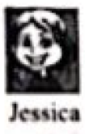

2018年北京市中考英语试题 · 阅读下列 第1篇 第21、22、23题
三、阅读下列短文．根据短文内容，从文后各所给的A、B、C、D四个选项中，选出最佳选项。
A
Roger: Hi, there! It was my 15th birthday last Saturday. Some of my friends and Alan, my cousin, came to celebrate it. Everyone brought me a gift. We played games, sang songs and had a big birthday cake. It was really a wonderful day! Did you do anything special last week?

Jessica: Yes, My class were on a school field trip last week. First, we went to the University of North Carolina to learn about the history of its basketball team. Many basketball stars were students there. Then we visited a museum. We learned about how the plane was invented and took many pictures there.
Sara: Well, I was lucky enough to go to a conference（会议）on charity(慈善) last Wednesday. I was excited to meet a lot of kind people there. One of them was a boy named Richard. He spoke at the conference about the charity work that he had done in the past few years.
Martin: It was a different week than usual. Last Thursday, my school band（乐队）went to Atlanta to perform in a competition. I played the violin and we won a prize! On Friday we went to the Georgia Aquarium and got to see different kinds of sea life from all over the world. It was really cool!
21. When did Roger have his birthday party?
A. Last WednesdayB. last Thursday
C. Last FridayD. Last Saturday.
22. Who went on a school field trip last week?
A. Alan.B. JessicaC. SaraD. Richard.
23. Martin went to Atlanta to .
A. speak at a conferenceB. organize a party
C. perform in a competitionD. visit a university